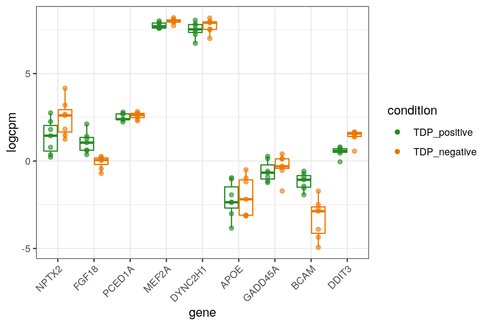
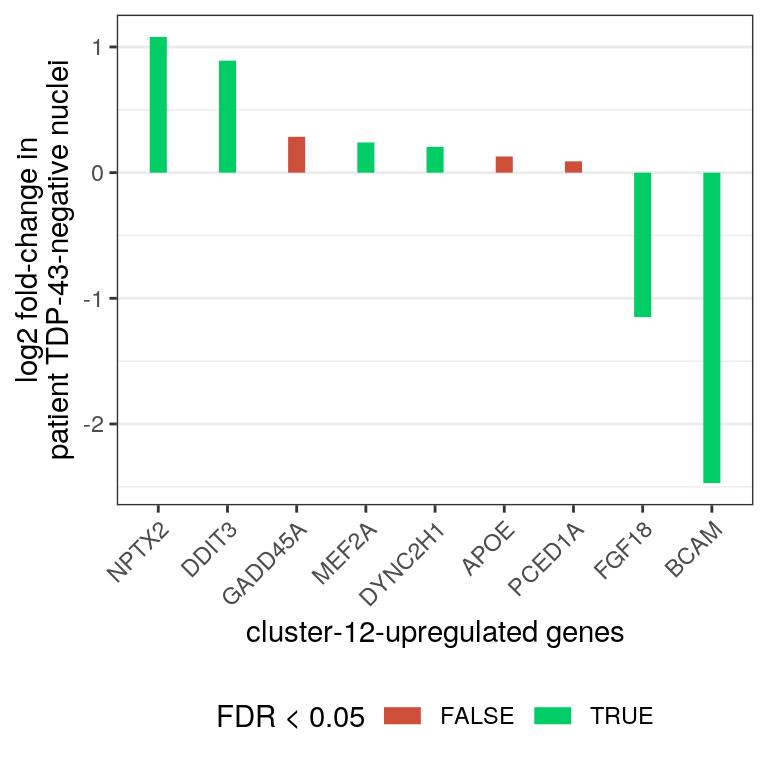

Expression of TDP-HA cluster markers in ALS brain RNA-seq
Katharina Hembach
07.07.2021
Last updated: 2021-07-13
Checks: 7 0
Knit directory: neural_scRNAseq/
This reproducible R Markdown analysis was created with workflowr (version 1.6.2). The Checks tab describes the reproducibility checks that were applied when the results were created. The Past versions tab lists the development history.
Great! Since the R Markdown file has been committed to the Git repository, you know the exact version of the code that produced these results.
Great job! The global environment was empty. Objects defined in the global environment can affect the analysis in your R Markdown file in unknown ways. For reproduciblity it's best to always run the code in an empty environment.
The command set.seed(20200522) was run prior to running the code in the R Markdown file. Setting a seed ensures that any results that rely on randomness, e.g. subsampling or permutations, are reproducible.
Great job! Recording the operating system, R version, and package versions is critical for reproducibility.
Nice! There were no cached chunks for this analysis, so you can be confident that you successfully produced the results during this run.
Great job! Using relative paths to the files within your workflowr project makes it easier to run your code on other machines.
Great! You are using Git for version control. Tracking code development and connecting the code version to the results is critical for reproducibility.
The results in this page were generated with repository version dc892b2. See the Past versions tab to see a history of the changes made to the R Markdown and HTML files.
Note that you need to be careful to ensure that all relevant files for the analysis have been committed to Git prior to generating the results (you can use wflow_publish or wflow_git_commit). workflowr only checks the R Markdown file, but you know if there are other scripts or data files that it depends on. Below is the status of the Git repository when the results were generated:
Ignored files:
Ignored: .DS_Store
Ignored: .Rhistory
Ignored: .Rproj.user/
Ignored: ._.DS_Store
Ignored: ._Filtered.pdf
Ignored: ._Rplots.pdf
Ignored: ._Unfiltered.pdf
Ignored: .__workflowr.yml
Ignored: ._coverage.pdf
Ignored: ._coverage_sashimi.pdf
Ignored: ._coverage_sashimi.png
Ignored: ._neural_scRNAseq.Rproj
Ignored: ._pbDS_cell_level.pdf
Ignored: ._pbDS_top_expr_umap.pdf
Ignored: ._pbDS_upset.pdf
Ignored: ._sashimi.pdf
Ignored: ._stmn2.pdf
Ignored: ._tdp.pdf
Ignored: analysis/.DS_Store
Ignored: analysis/.Rhistory
Ignored: analysis/._.DS_Store
Ignored: analysis/._01-preprocessing.Rmd
Ignored: analysis/._01-preprocessing.html
Ignored: analysis/._02.1-SampleQC.Rmd
Ignored: analysis/._03-filtering.Rmd
Ignored: analysis/._04-clustering.Rmd
Ignored: analysis/._04-clustering.knit.md
Ignored: analysis/._04.1-cell_cycle.Rmd
Ignored: analysis/._05-annotation.Rmd
Ignored: analysis/._07-cluster-analysis-all-timepoints.Rmd
Ignored: analysis/._Lam-0-NSC_no_integration.Rmd
Ignored: analysis/._Lam-01-NSC_integration.Rmd
Ignored: analysis/._Lam-02-NSC_annotation.Rmd
Ignored: analysis/._NSC-1-clustering.Rmd
Ignored: analysis/._NSC-2-annotation.Rmd
Ignored: analysis/._TDP-06-cluster_analysis.Rmd
Ignored: analysis/.__site.yml
Ignored: analysis/._additional_filtering.Rmd
Ignored: analysis/._additional_filtering_clustering.Rmd
Ignored: analysis/._index.Rmd
Ignored: analysis/._organoid-01-1-qualtiy-control.Rmd
Ignored: analysis/._organoid-01-clustering.Rmd
Ignored: analysis/._organoid-02-integration.Rmd
Ignored: analysis/._organoid-03-cluster_analysis.Rmd
Ignored: analysis/._organoid-04-group_integration.Rmd
Ignored: analysis/._organoid-04-stage_integration.Rmd
Ignored: analysis/._organoid-05-group_integration_cluster_analysis.Rmd
Ignored: analysis/._organoid-05-stage_integration_cluster_analysis.Rmd
Ignored: analysis/._organoid-06-1-prepare-sce.Rmd
Ignored: analysis/._organoid-06-conos-analysis-Seurat.Rmd
Ignored: analysis/._organoid-06-conos-analysis-function.Rmd
Ignored: analysis/._organoid-06-conos-analysis.Rmd
Ignored: analysis/._organoid-06-group-integration-conos-analysis.Rmd
Ignored: analysis/._organoid-07-conos-visualization.Rmd
Ignored: analysis/._organoid-07-group-integration-conos-visualization.Rmd
Ignored: analysis/._organoid-08-conos-comparison.Rmd
Ignored: analysis/._organoid-0x-sample_integration.Rmd
Ignored: analysis/01-preprocessing_cache/
Ignored: analysis/02-1-SampleQC_cache/
Ignored: analysis/02-quality_control_cache/
Ignored: analysis/02.1-SampleQC_cache/
Ignored: analysis/03-filtering_cache/
Ignored: analysis/04-clustering_cache/
Ignored: analysis/04.1-cell_cycle_cache/
Ignored: analysis/05-annotation_cache/
Ignored: analysis/06-clustering-all-timepoints_cache/
Ignored: analysis/07-cluster-analysis-all-timepoints_cache/
Ignored: analysis/CH-test-01-preprocessing_cache/
Ignored: analysis/CH-test-02-transgene-expression_cache/
Ignored: analysis/CH-test-03-cluster-analysis_cache/
Ignored: analysis/Lam-01-NSC_integration_cache/
Ignored: analysis/Lam-02-NSC_annotation_cache/
Ignored: analysis/NSC-1-clustering_cache/
Ignored: analysis/NSC-2-annotation_cache/
Ignored: analysis/TDP-01-preprocessing_cache/
Ignored: analysis/TDP-02-quality_control_cache/
Ignored: analysis/TDP-03-filtering_cache/
Ignored: analysis/TDP-04-clustering_cache/
Ignored: analysis/TDP-05-00-filtering-plasmid-QC_cache/
Ignored: analysis/TDP-05-plasmid_expression_cache/
Ignored: analysis/TDP-06-cluster_analysis_cache/
Ignored: analysis/TDP-07-01-STMN2_expression_cache/
Ignored: analysis/TDP-07-02-Prudencio_marker_expression_cache/
Ignored: analysis/TDP-07-cluster_12_cache/
Ignored: analysis/TDP-08-00-clustering-HA-D96_cache/
Ignored: analysis/TDP-08-01-HA-D96-expression-changes_cache/
Ignored: analysis/TDP-08-02-TDP_target_genes_cache/
Ignored: analysis/TDP-08-clustering-timeline-HA_cache/
Ignored: analysis/additional_filtering_cache/
Ignored: analysis/additional_filtering_clustering_cache/
Ignored: analysis/organoid-01-1-qualtiy-control_cache/
Ignored: analysis/organoid-01-clustering_cache/
Ignored: analysis/organoid-02-integration_cache/
Ignored: analysis/organoid-03-cluster_analysis_cache/
Ignored: analysis/organoid-04-group_integration_cache/
Ignored: analysis/organoid-04-stage_integration_cache/
Ignored: analysis/organoid-05-group_integration_cluster_analysis_cache/
Ignored: analysis/organoid-05-stage_integration_cluster_analysis_cache/
Ignored: analysis/organoid-06-conos-analysis_cache/
Ignored: analysis/organoid-06-conos-analysis_test_cache/
Ignored: analysis/organoid-06-group-integration-conos-analysis_cache/
Ignored: analysis/organoid-07-conos-visualization_cache/
Ignored: analysis/organoid-07-group-integration-conos-visualization_cache/
Ignored: analysis/organoid-08-conos-comparison_cache/
Ignored: analysis/organoid-0x-sample_integration_cache/
Ignored: analysis/sample5_QC_cache/
Ignored: analysis/timepoints-01-organoid-integration_cache/
Ignored: analysis/timepoints-02-cluster-analysis_cache/
Ignored: data/.DS_Store
Ignored: data/._.DS_Store
Ignored: data/._.smbdeleteAAA17ed8b4b
Ignored: data/._Lam_figure2_markers.R
Ignored: data/._README.md
Ignored: data/._Reactive_astrocytes_markers.xlsx
Ignored: data/._known_NSC_markers.R
Ignored: data/._known_cell_type_markers.R
Ignored: data/._metadata.csv
Ignored: data/._virus_cell_tropism_markers.R
Ignored: data/._~$Reactive_astrocytes_markers.xlsx
Ignored: data/data_sushi/
Ignored: data/filtered_feature_matrices/
Ignored: output/.DS_Store
Ignored: output/._.DS_Store
Ignored: output/._Liu_TDP_neg_vs_pos_edgeR_dge_results.txt
Ignored: output/._NSC_cluster2_marker_genes.txt
Ignored: output/._TDP-06-no_integration_cluster12_marker_genes.txt
Ignored: output/._TDP-06-no_integration_cluster13_marker_genes.txt
Ignored: output/._organoid_integration_cluster1_marker_genes.txt
Ignored: output/._tbl_TDP-08-01-muscat_cluster_0.txt
Ignored: output/._tbl_TDP-08-01-muscat_cluster_1.txt
Ignored: output/._tbl_TDP-08-01-muscat_cluster_10.txt
Ignored: output/._tbl_TDP-08-01-muscat_cluster_11.txt
Ignored: output/._tbl_TDP-08-01-muscat_cluster_12.txt
Ignored: output/._tbl_TDP-08-01-muscat_cluster_13.txt
Ignored: output/._tbl_TDP-08-01-muscat_cluster_14.txt
Ignored: output/._tbl_TDP-08-01-muscat_cluster_5.txt
Ignored: output/._tbl_TDP-08-01-muscat_cluster_7.txt
Ignored: output/._tbl_TDP-08-01-muscat_cluster_8.txt
Ignored: output/._tbl_TDP-08-01-muscat_cluster_all.xlsx
Ignored: output/._tbl_TDP-08-02-targets_hek_cluster_0.txt
Ignored: output/._tbl_TDP-08-02-targets_hek_cluster_1.txt
Ignored: output/._tbl_TDP-08-02-targets_hek_cluster_10.txt
Ignored: output/._tbl_TDP-08-02-targets_hek_cluster_11.txt
Ignored: output/._tbl_TDP-08-02-targets_hek_cluster_12.txt
Ignored: output/._tbl_TDP-08-02-targets_hek_cluster_13.txt
Ignored: output/._tbl_TDP-08-02-targets_hek_cluster_14.txt
Ignored: output/._tbl_TDP-08-02-targets_hek_cluster_5.txt
Ignored: output/._tbl_TDP-08-02-targets_hek_cluster_7.txt
Ignored: output/._tbl_TDP-08-02-targets_hek_cluster_8.txt
Ignored: output/._tbl_TDP-08-02-targets_hek_cluster_all.xlsx
Ignored: output/._~$tbl_TDP-08-02-targets_hek_cluster_all.xlsx
Ignored: output/CH-test-01-preprocessing.rds
Ignored: output/CH-test-01-preprocessing_singlets.rds
Ignored: output/CH-test-01-preprocessing_singlets_filtered.rds
Ignored: output/CH-test-01-preprocessing_so.rds
Ignored: output/CH-test-01-preprocessing_so_filtered.rds
Ignored: output/CH-test-03-cluster-analysis_so.rds
Ignored: output/CH-test-03_scran_markers.rds
Ignored: output/Lam-01-clustering.rds
Ignored: output/Liu_TDP_neg_vs_pos_edgeR_dge.rds
Ignored: output/Liu_TDP_neg_vs_pos_edgeR_dge_results.txt
Ignored: output/NSC_1_clustering.rds
Ignored: output/NSC_cluster1_marker_genes.txt
Ignored: output/NSC_cluster2_marker_genes.txt
Ignored: output/NSC_cluster3_marker_genes.txt
Ignored: output/NSC_cluster4_marker_genes.txt
Ignored: output/NSC_cluster5_marker_genes.txt
Ignored: output/NSC_cluster6_marker_genes.txt
Ignored: output/NSC_cluster7_marker_genes.txt
Ignored: output/TDP-06-no_integration_cluster0_marker_genes.txt
Ignored: output/TDP-06-no_integration_cluster10_marker_genes.txt
Ignored: output/TDP-06-no_integration_cluster11_marker_genes.txt
Ignored: output/TDP-06-no_integration_cluster12_marker_genes.txt
Ignored: output/TDP-06-no_integration_cluster13_marker_genes.txt
Ignored: output/TDP-06-no_integration_cluster14_marker_genes.txt
Ignored: output/TDP-06-no_integration_cluster15_marker_genes.txt
Ignored: output/TDP-06-no_integration_cluster16_marker_genes.txt
Ignored: output/TDP-06-no_integration_cluster17_marker_genes.txt
Ignored: output/TDP-06-no_integration_cluster1_marker_genes.txt
Ignored: output/TDP-06-no_integration_cluster2_marker_genes.txt
Ignored: output/TDP-06-no_integration_cluster3_marker_genes.txt
Ignored: output/TDP-06-no_integration_cluster4_marker_genes.txt
Ignored: output/TDP-06-no_integration_cluster5_marker_genes.txt
Ignored: output/TDP-06-no_integration_cluster6_marker_genes.txt
Ignored: output/TDP-06-no_integration_cluster7_marker_genes.txt
Ignored: output/TDP-06-no_integration_cluster8_marker_genes.txt
Ignored: output/TDP-06-no_integration_cluster9_marker_genes.txt
Ignored: output/TDP-06_scran_markers.rds
Ignored: output/additional_filtering.rds
Ignored: output/conos/
Ignored: output/conos_organoid-06-conos-analysis.rds
Ignored: output/conos_organoid-06-group-integration-conos-analysis.rds
Ignored: output/figures/
Ignored: output/organoid_integration_cluster10_marker_genes.txt
Ignored: output/organoid_integration_cluster11_marker_genes.txt
Ignored: output/organoid_integration_cluster12_marker_genes.txt
Ignored: output/organoid_integration_cluster13_marker_genes.txt
Ignored: output/organoid_integration_cluster14_marker_genes.txt
Ignored: output/organoid_integration_cluster15_marker_genes.txt
Ignored: output/organoid_integration_cluster16_marker_genes.txt
Ignored: output/organoid_integration_cluster17_marker_genes.txt
Ignored: output/organoid_integration_cluster1_marker_genes.txt
Ignored: output/organoid_integration_cluster2_marker_genes.txt
Ignored: output/organoid_integration_cluster3_marker_genes.txt
Ignored: output/organoid_integration_cluster4_marker_genes.txt
Ignored: output/organoid_integration_cluster5_marker_genes.txt
Ignored: output/organoid_integration_cluster6_marker_genes.txt
Ignored: output/organoid_integration_cluster7_marker_genes.txt
Ignored: output/organoid_integration_cluster8_marker_genes.txt
Ignored: output/organoid_integration_cluster9_marker_genes.txt
Ignored: output/paper_supplement/
Ignored: output/res_TDP-08-01-muscat.rds
Ignored: output/sce_01_preprocessing.rds
Ignored: output/sce_02_quality_control.rds
Ignored: output/sce_03_filtering.rds
Ignored: output/sce_03_filtering_all_genes.rds
Ignored: output/sce_06-1-prepare-sce.rds
Ignored: output/sce_TDP-08-01-muscat.rds
Ignored: output/sce_TDP_01_preprocessing.rds
Ignored: output/sce_TDP_02_quality_control.rds
Ignored: output/sce_TDP_03_filtering.rds
Ignored: output/sce_TDP_03_filtering_all_genes.rds
Ignored: output/sce_organoid-01-clustering.rds
Ignored: output/sce_preprocessing.rds
Ignored: output/so_04-stage_integration.rds
Ignored: output/so_04_1_cell_cycle.rds
Ignored: output/so_04_clustering.rds
Ignored: output/so_06-clustering_all_timepoints.rds
Ignored: output/so_08-00_clustering_HA_D96.rds
Ignored: output/so_08-clustering_timeline_HA.rds
Ignored: output/so_0x-sample_integration.rds
Ignored: output/so_CH-test-02-transgene_expression.rds
Ignored: output/so_TDP-06-cluster-analysis.rds
Ignored: output/so_TDP_04_clustering.rds
Ignored: output/so_TDP_05_plasmid_expression.rds
Ignored: output/so_additional_filtering_clustering.rds
Ignored: output/so_integrated_organoid-02-integration.rds
Ignored: output/so_merged_organoid-02-integration.rds
Ignored: output/so_organoid-01-clustering.rds
Ignored: output/so_sample_organoid-01-clustering.rds
Ignored: output/so_timepoints-01-organoid_integration.rds
Ignored: output/tbl_TDP-08-01-muscat.rds
Ignored: output/tbl_TDP-08-01-muscat_cluster_0.txt
Ignored: output/tbl_TDP-08-01-muscat_cluster_1.txt
Ignored: output/tbl_TDP-08-01-muscat_cluster_10.txt
Ignored: output/tbl_TDP-08-01-muscat_cluster_11.txt
Ignored: output/tbl_TDP-08-01-muscat_cluster_12.txt
Ignored: output/tbl_TDP-08-01-muscat_cluster_13.txt
Ignored: output/tbl_TDP-08-01-muscat_cluster_14.txt
Ignored: output/tbl_TDP-08-01-muscat_cluster_5.txt
Ignored: output/tbl_TDP-08-01-muscat_cluster_7.txt
Ignored: output/tbl_TDP-08-01-muscat_cluster_8.txt
Ignored: output/tbl_TDP-08-01-muscat_cluster_all.xlsx
Ignored: output/tbl_TDP-08-02-targets_hek.rds
Ignored: output/tbl_TDP-08-02-targets_hek_cluster_0.txt
Ignored: output/tbl_TDP-08-02-targets_hek_cluster_1.txt
Ignored: output/tbl_TDP-08-02-targets_hek_cluster_10.txt
Ignored: output/tbl_TDP-08-02-targets_hek_cluster_11.txt
Ignored: output/tbl_TDP-08-02-targets_hek_cluster_12.txt
Ignored: output/tbl_TDP-08-02-targets_hek_cluster_13.txt
Ignored: output/tbl_TDP-08-02-targets_hek_cluster_14.txt
Ignored: output/tbl_TDP-08-02-targets_hek_cluster_5.txt
Ignored: output/tbl_TDP-08-02-targets_hek_cluster_7.txt
Ignored: output/tbl_TDP-08-02-targets_hek_cluster_8.txt
Ignored: output/tbl_TDP-08-02-targets_hek_cluster_all.xlsx
Ignored: output/~$tbl_TDP-08-02-targets_hek_cluster_all.xlsx
Ignored: scripts/.DS_Store
Ignored: scripts/._.DS_Store
Ignored: scripts/._bu_Rcode.R
Ignored: scripts/._plasmid_expression.sh
Ignored: scripts/._plasmid_expression_cell_hashing_test.sh
Ignored: scripts/._prepare_salmon_transcripts.R
Ignored: scripts/._prepare_salmon_transcripts_cell_hashing_test.R
Untracked files:
Untracked: = gene_name[order(logFC,
Untracked: Filtered.pdf
Untracked: Rplots.pdf
Untracked: Unfiltered
Untracked: Unfiltered.pdf
Untracked: analysis/Lam-0-NSC_no_integration.Rmd
Untracked: analysis/TDP-07-01-STMN2_expression copy.Rmd
Untracked: analysis/additional_filtering.Rmd
Untracked: analysis/additional_filtering_clustering.Rmd
Untracked: analysis/organoid-01-1-qualtiy-control.Rmd
Untracked: analysis/organoid-06-conos-analysis-Seurat.Rmd
Untracked: analysis/organoid-06-conos-analysis-function.Rmd
Untracked: analysis/organoid-07-conos-visualization.Rmd
Untracked: analysis/organoid-07-group-integration-conos-visualization.Rmd
Untracked: analysis/organoid-08-conos-comparison.Rmd
Untracked: analysis/organoid-0x-sample_integration.Rmd
Untracked: analysis/sample5_QC.Rmd
Untracked: coverage.pdf
Untracked: coverage_sashimi.pdf
Untracked: coverage_sashimi.png
Untracked: data/Homo_sapiens.GRCh38.98.sorted.gtf
Untracked: data/Jun2021/
Untracked: data/Kanton_et_al/
Untracked: data/Lam_et_al/
Untracked: data/Liu_et_al/
Untracked: data/Prudencio_et_al/
Untracked: data/Sep2020/
Untracked: data/cell_hashing_test/
Untracked: data/reference/
Untracked: data/virus_cell_tropism_markers.R
Untracked: data/~$Reactive_astrocytes_markers.xlsx
Untracked: pbDS_cell_level.pdf
Untracked: pbDS_heatmap.pdf
Untracked: pbDS_top_expr_umap.pdf
Untracked: pbDS_upset.pdf
Untracked: sashimi.pdf
Untracked: scripts/bu_Rcode.R
Untracked: scripts/bu_code.Rmd
Untracked: scripts/plasmid_expression_cell_hashing_test.sh
Untracked: scripts/prepare_salmon_transcripts_cell_hashing_test.R
Untracked: scripts/salmon-latest_linux_x86_64/
Untracked: stmn2.pdf
Untracked: tdp.pdf
Unstaged changes:
Modified: analysis/05-annotation.Rmd
Modified: analysis/TDP-04-clustering.Rmd
Modified: analysis/TDP-07-cluster_12.Rmd
Modified: analysis/TDP-08-01-HA-D96-expression-changes.Rmd
Modified: analysis/_site.yml
Modified: analysis/organoid-02-integration.Rmd
Modified: analysis/organoid-04-group_integration.Rmd
Modified: analysis/organoid-06-conos-analysis.Rmd
Note that any generated files, e.g. HTML, png, CSS, etc., are not included in this status report because it is ok for generated content to have uncommitted changes.
These are the previous versions of the repository in which changes were made to the R Markdown (analysis/TDP-07-03-Liu_sorted_nuclei_marker_expression.Rmd) and HTML (docs/TDP-07-03-Liu_sorted_nuclei_marker_expression.html) files. If you've configured a remote Git repository (see ?wflow_git_remote), click on the hyperlinks in the table below to view the files as they were in that past version.
| File | Version | Author | Date | Message |
|---|---|---|---|---|
| Rmd | dc892b2 | khembach | 2021-07-13 | barplot instead of points |
| html | be3be06 | khembach | 2021-07-12 | Build site. |
| Rmd | 965e817 | khembach | 2021-07-12 | plot logFC of all marker genes |
| html | c55f3b8 | khembach | 2021-07-09 | Build site. |
| Rmd | cfdc0eb | khembach | 2021-07-09 | add UNC13A to marker list and plot all markers in one figure |
| html | 611019e | khembach | 2021-07-07 | Build site. |
| Rmd | e4718a8 | khembach | 2021-07-07 | edgeR DGE analysis and cluster 12 marker expression in sorted nuclei |
Load packages
library(ggplot2)
library(dplyr)
library(readxl)
library(edgeR)
library(tidyr)
library(data.table)Load data
metadat <- read_excel(file.path("data", "Liu_et_al", "metadata.xlsx"))
# metadat <- read_excel(file.path("data", "Prudencio_et_al",
# "GSE67196_Petrucelli2015_ALS_genes.rawcount.xlsx"),
# sheet = "metadata")
dat <- fread(file.path("data", "Liu_et_al", "GSE126542_NeuronalNuclei_RNAseq_counts.txt"))Prepare DGE object
We calculate normalization factors to scale the raw library sizes and minimize the log-fold changes between the samples for most genes. Here the trimmed mean of M-values between each pair of samples (TMM) is used by default. We also add the gene names.
## generate DGE object
dge0 <- DGEList(counts = dat[,-"gene"], genes = data.frame(gene_name = dat[["gene"]]),
samples = metadat[match(colnames(dat[,-"gene"]), metadat$sample),])
dge0$samples$condition <- factor(dge0$samples$condition,
levels = c("TDP_positive", "TDP_negative"))
dge0 <- calcNormFactors(dge0)
dge0$samples group lib.size norm.factors Experiment.Accession
S1_TN 1 56947896 0.8416073 SRX5373069
S1_TP 1 52691795 0.9068557 SRX5373068
S2_TN 1 63369730 0.9531028 SRX5373071
S2_TP 1 66606293 1.1445786 SRX5373070
S3_TN 1 56063821 1.0490842 SRX5373073
S3_TP 1 53230793 1.1573173 SRX5373072
S4_TN 1 63838338 1.0891277 SRX5373076
S4_TP 1 66655833 1.1787754 SRX5373075
S5_TN 1 69950896 0.9507708 SRX5373079
S5_TP 1 65712555 0.9984895 SRX5373078
S6_TN 1 65962492 0.9460587 SRX5373081
S6_TP 1 61708917 1.0066190 SRX5373080
S7_TN 1 53133044 0.9048945 SRX5373083
S7_TP 1 56713147 0.9418761 SRX5373082
Experiment.Title
S1_TN GSM3603264: RNA-Seq - NeuN positive/TDP-43 negative S1; Homo sapiens; RNA-Seq
S1_TP GSM3603263: RNA-Seq - NeuN positive/TDP-43 positive S1; Homo sapiens; RNA-Seq
S2_TN GSM3603266: RNA-Seq - NeuN positive/TDP-43 negative S2; Homo sapiens; RNA-Seq
S2_TP GSM3603265: RNA-Seq - NeuN positive/TDP-43 positive S2; Homo sapiens; RNA-Seq
S3_TN GSM3603268: RNA-Seq - NeuN positive/TDP-43 negative S3; Homo sapiens; RNA-Seq
S3_TP GSM3603267: RNA-Seq - NeuN positive/TDP-43 positive S3; Homo sapiens; RNA-Seq
S4_TN GSM3603271: RNA-Seq - NeuN positive/TDP-43 negative S4; Homo sapiens; RNA-Seq
S4_TP GSM3603270: RNA-Seq - NeuN positive/TDP-43 positive S4; Homo sapiens; RNA-Seq
S5_TN GSM3603274: RNA-Seq - NeuN positive/TDP-43 negative S5; Homo sapiens; RNA-Seq
S5_TP GSM3603273: RNA-Seq - NeuN positive/TDP-43 positive S5; Homo sapiens; RNA-Seq
S6_TN GSM3603276: RNA-Seq - NeuN positive/TDP-43 negative S6; Homo sapiens; RNA-Seq
S6_TP GSM3603275: RNA-Seq - NeuN positive/TDP-43 positive S6; Homo sapiens; RNA-Seq
S7_TN GSM3603278: RNA-Seq - NeuN positive/TDP-43 negative S7; Homo sapiens; RNA-Seq
S7_TP GSM3603277: RNA-Seq - NeuN positive/TDP-43 positive S7; Homo sapiens; RNA-Seq
Organism.Name Instrument Submitter Study.Accession
S1_TN Homo sapiens Illumina HiSeq 2500 GEO SRP185789
S1_TP Homo sapiens Illumina HiSeq 2500 GEO SRP185789
S2_TN Homo sapiens Illumina HiSeq 2500 GEO SRP185789
S2_TP Homo sapiens Illumina HiSeq 2500 GEO SRP185789
S3_TN Homo sapiens Illumina HiSeq 2500 GEO SRP185789
S3_TP Homo sapiens Illumina HiSeq 2500 GEO SRP185789
S4_TN Homo sapiens Illumina HiSeq 2500 GEO SRP185789
S4_TP Homo sapiens Illumina HiSeq 2500 GEO SRP185789
S5_TN Homo sapiens Illumina HiSeq 2500 GEO SRP185789
S5_TP Homo sapiens Illumina HiSeq 2500 GEO SRP185789
S6_TN Homo sapiens Illumina HiSeq 2500 GEO SRP185789
S6_TP Homo sapiens Illumina HiSeq 2500 GEO SRP185789
S7_TN Homo sapiens Illumina HiSeq 2500 GEO SRP185789
S7_TP Homo sapiens Illumina HiSeq 2500 GEO SRP185789
Study.Title
S1_TN Loss of Nuclear TDP-43 Is Associated with Decondensation of LINE Retrotransposons [RNA-Seq]
S1_TP Loss of Nuclear TDP-43 Is Associated with Decondensation of LINE Retrotransposons [RNA-Seq]
S2_TN Loss of Nuclear TDP-43 Is Associated with Decondensation of LINE Retrotransposons [RNA-Seq]
S2_TP Loss of Nuclear TDP-43 Is Associated with Decondensation of LINE Retrotransposons [RNA-Seq]
S3_TN Loss of Nuclear TDP-43 Is Associated with Decondensation of LINE Retrotransposons [RNA-Seq]
S3_TP Loss of Nuclear TDP-43 Is Associated with Decondensation of LINE Retrotransposons [RNA-Seq]
S4_TN Loss of Nuclear TDP-43 Is Associated with Decondensation of LINE Retrotransposons [RNA-Seq]
S4_TP Loss of Nuclear TDP-43 Is Associated with Decondensation of LINE Retrotransposons [RNA-Seq]
S5_TN Loss of Nuclear TDP-43 Is Associated with Decondensation of LINE Retrotransposons [RNA-Seq]
S5_TP Loss of Nuclear TDP-43 Is Associated with Decondensation of LINE Retrotransposons [RNA-Seq]
S6_TN Loss of Nuclear TDP-43 Is Associated with Decondensation of LINE Retrotransposons [RNA-Seq]
S6_TP Loss of Nuclear TDP-43 Is Associated with Decondensation of LINE Retrotransposons [RNA-Seq]
S7_TN Loss of Nuclear TDP-43 Is Associated with Decondensation of LINE Retrotransposons [RNA-Seq]
S7_TP Loss of Nuclear TDP-43 Is Associated with Decondensation of LINE Retrotransposons [RNA-Seq]
Sample.Accession Total.Size..Mb Total.RUNs Total.Spots Total.Bases
S1_TN SRS4361182 14783.46 1 151210060 36288552250
S1_TP SRS4361180 14203.37 1 145718214 34996399600
S2_TN SRS4361184 13986.87 1 144818443 34870008150
S2_TP SRS4361181 15169.53 1 154923320 37159091950
S3_TN SRS4361185 11899.29 1 117780545 27942136100
S3_TP SRS4361183 12315.07 1 120024367 28242749150
S4_TN SRS4361190 12963.65 1 127236303 30140134150
S4_TP SRS4361187 12913.88 1 126356871 29933976100
S5_TN SRS4361191 17132.26 1 170786112 40775514450
S5_TP SRS4361189 13871.14 1 137878652 32837216200
S6_TN SRS4361193 15609.90 1 156150613 37214362850
S6_TP SRS4361192 14523.02 1 146966879 35165842400
S7_TN SRS4361195 13171.29 1 133307846 31941833100
S7_TP SRS4361194 13622.80 1 137913088 32872986450
Library.Strategy Library.Source Library.Selection Diagnosis gender
S1_TN RNA-Seq TRANSCRIPTOMIC cDNA FTD female
S1_TP RNA-Seq TRANSCRIPTOMIC cDNA FTD female
S2_TN RNA-Seq TRANSCRIPTOMIC cDNA FTD-ALS male
S2_TP RNA-Seq TRANSCRIPTOMIC cDNA FTD-ALS male
S3_TN RNA-Seq TRANSCRIPTOMIC cDNA FTD female
S3_TP RNA-Seq TRANSCRIPTOMIC cDNA FTD female
S4_TN RNA-Seq TRANSCRIPTOMIC cDNA FTD female
S4_TP RNA-Seq TRANSCRIPTOMIC cDNA FTD female
S5_TN RNA-Seq TRANSCRIPTOMIC cDNA FTD male
S5_TP RNA-Seq TRANSCRIPTOMIC cDNA FTD male
S6_TN RNA-Seq TRANSCRIPTOMIC cDNA FTD-ALS male
S6_TP RNA-Seq TRANSCRIPTOMIC cDNA FTD-ALS male
S7_TN RNA-Seq TRANSCRIPTOMIC cDNA FTD-ALS male
S7_TP RNA-Seq TRANSCRIPTOMIC cDNA FTD-ALS male
condition experiment sample
S1_TN TDP_negative S1 S1_TN
S1_TP TDP_positive S1 S1_TP
S2_TN TDP_negative S2 S2_TN
S2_TP TDP_positive S2 S2_TP
S3_TN TDP_negative S3 S3_TN
S3_TP TDP_positive S3 S3_TP
S4_TN TDP_negative S4 S4_TN
S4_TP TDP_positive S4 S4_TP
S5_TN TDP_negative S5 S5_TN
S5_TP TDP_positive S5 S5_TP
S6_TN TDP_negative S6 S6_TN
S6_TP TDP_positive S6 S6_TP
S7_TN TDP_negative S7 S7_TN
S7_TP TDP_positive S7 S7_TPPlot total number of reads per sample
ggplot(dge0$samples, aes(x = sample, y = lib.size)) + geom_bar(stat = "identity") +
theme_bw() + xlab("") + ylab("Total read count") +
theme(axis.text.x = element_text(angle = 90, hjust = 1, vjust = 0.5))
| Version | Author | Date |
|---|---|---|
| 611019e | khembach | 2021-07-07 |
Define design.
Next, we specify the design matrix of the experiment, defining which sample annotations will be taken into account in the statistical modeling. We use a paired design, because we have sorted nuclei with and without TDP (condition) for each subject (experiment).
stopifnot(all(colnames(dge0) == dge0$samples$sample))
(des <- model.matrix(~experiment + condition, data = dge0$samples)) (Intercept) experimentS2 experimentS3 experimentS4 experimentS5
S1_TN 1 0 0 0 0
S1_TP 1 0 0 0 0
S2_TN 1 1 0 0 0
S2_TP 1 1 0 0 0
S3_TN 1 0 1 0 0
S3_TP 1 0 1 0 0
S4_TN 1 0 0 1 0
S4_TP 1 0 0 1 0
S5_TN 1 0 0 0 1
S5_TP 1 0 0 0 1
S6_TN 1 0 0 0 0
S6_TP 1 0 0 0 0
S7_TN 1 0 0 0 0
S7_TP 1 0 0 0 0
experimentS6 experimentS7 conditionTDP_negative
S1_TN 0 0 1
S1_TP 0 0 0
S2_TN 0 0 1
S2_TP 0 0 0
S3_TN 0 0 1
S3_TP 0 0 0
S4_TN 0 0 1
S4_TP 0 0 0
S5_TN 0 0 1
S5_TP 0 0 0
S6_TN 1 0 1
S6_TP 1 0 0
S7_TN 0 1 1
S7_TP 0 1 0
attr(,"assign")
[1] 0 1 1 1 1 1 1 2
attr(,"contrasts")
attr(,"contrasts")$experiment
[1] "contr.treatment"
attr(,"contrasts")$condition
[1] "contr.treatment"Filter out lowly expressed genes
Next we determine which genes have sufficiently large counts to be retained in the statistical analysis, and remove the rest. After removing genes, we recalculate the normalization factors.
dim(dge0)[1] 58567 14keep <- edgeR::filterByExpr(dge0, design = des)
dge <- dge0[keep, ]
dge <- calcNormFactors(dge)
dim(dge)[1] 23028 14Calculate logCPMs
Note, we don't have the average transcript lengths which would normally be used with Salmon transcript expression estimates as correction terms.
We calculate log-counts per million (CPMs) because they are useful descriptive measures for the expression level of a gene. Note, however, that the normalized values are not used for the differential expression analysis. By default, the normalized library sizes are used in the computation.
# log2 cpms
logcpms <- edgeR::cpm(dge, log = TRUE, prior.count = 2)
dimnames(logcpms) <- list(dge$genes$gene_name, colnames(dge$counts))Estimate dispersion and fit QL model
We model the count data using a quasi-likelihood (QL) negative binomial (NB) generalized log-linear model, which accounts for gene-specific variability from both biological and technical sources. Before fitting the model, we estimate the NB dispersion (overall biological variability across all genes), and the QL dispersion (gene-specific) using the estimateDisp() function.
It is also good practice to look at the relationship between the biological coefficient of variation (NB dispersion) and the gene abundance (in logCPMs).
## Estimate dispersion and fit model
dge <- estimateDisp(dge, design = des)
qlfit <- glmQLFit(dge, design = des)
## Plot dispersions
plotBCV(dge)
| Version | Author | Date |
|---|---|---|
| 611019e | khembach | 2021-07-07 |
## MDS plot
plotMDS(dge)
| Version | Author | Date |
|---|---|---|
| 611019e | khembach | 2021-07-07 |
Define contrasts
Before testing for differences in gene expression, we define the contrasts we wish to test for. Here we represent the constrasts as a numeric matrix:
## we test the last coefficient, which is the difference between TDP-43 negative and postiive cells.
(contrasts <- makeContrasts(contrasts = "conditionTDP_negative", levels = des))Warning in makeContrasts(contrasts = "conditionTDP_negative", levels = des):
Renaming (Intercept) to Intercept Contrasts
Levels conditionTDP_negative
Intercept 0
experimentS2 0
experimentS3 0
experimentS4 0
experimentS5 0
experimentS6 0
experimentS7 0
conditionTDP_negative 1Perform DGE tests
Now we perform genewise tests for every contrast defined above, and save the results for every contrast.
signif3 <- function(x) signif(x, digits = 3)
qlf <- glmQLFTest(qlfit, contrast = contrasts)
tt <- topTags(qlf, n = Inf, sort.by = "none")$table
edgeR_res <- tt %>%
dplyr::mutate(mlog10PValue = -log10(PValue)) %>%
dplyr::mutate_at(vars(one_of(c("logFC", "logCPM", "F",
"PValue", "FDR", "mlog10PValue"))),
list(signif3))Make MA plots
We can visualize the test results by plotting the logCPM (average) vs the logFC, and coloring genes with an adjusted p-value below 0.05 (or another specificed FDR threshold). A plot is drawn for every contrast.
ggplot(edgeR_res, aes(x = logCPM, y = logFC, color = FDR <= 0.05)) +
geom_point() + theme_bw() +
scale_color_manual(values = c("TRUE" = "red", "FALSE" = "black"))
| Version | Author | Date |
|---|---|---|
| 611019e | khembach | 2021-07-07 |
Write DGE results to text files
We export the results into text files that can be opened using any text editor.
## Write results to text files
write.table(edgeR_res %>% dplyr::arrange(PValue),
file = file.path("output", "Liu_TDP_neg_vs_pos_edgeR_dge_results.txt"),
sep = "\t", row.names = FALSE, col.names = TRUE, quote = FALSE)
analysis_res <- list(dge = dge, logcpm = logcpms, edgeR_res = edgeR_res)
saveRDS(analysis_res,
file = file.path("output", "Liu_TDP_neg_vs_pos_edgeR_dge.rds"))Expression of cluster 12 markers
We want to compare the gene expression of the cluster 12 markers in nuclei with and without TDP-43 expression.
markers <- list(up = c("NPTX2", "FGF18", "TDP43-HA", "PCED1A", "MEF2A", "DYNC2H1",
"APOE", "GADD45A", "BCAM", "DDIT3"),
down = c("VGF", "SCG2", "GAP43", "C4orf48", "HINT1", "LY6H",
"TUBA1A", "TMSB4X", "TUBB2B", "STMN2", "UNC13A"))
lapply(markers, function(x) x[x %in% dge$genes$gene_name])$up
[1] "NPTX2" "FGF18" "PCED1A" "MEF2A" "DYNC2H1" "APOE" "GADD45A"
[8] "BCAM" "DDIT3"
$down
[1] "VGF" "SCG2" "GAP43" "HINT1" "TUBA1A" "TMSB4X" "TUBB2B" "STMN2"
[9] "UNC13A"lapply(markers, function(x) x[!x %in% dge$genes$gene_name])$up
[1] "TDP43-HA"
$down
[1] "C4orf48" "LY6H" ind <- lapply(markers, function(x) match(x, dge$genes$gene_name))
markers <- lapply(names(ind), function(x) markers[[x]][!is.na(ind[[x]])])
names(markers) <- names(ind)
ind <- lapply(ind, function(x) x[!is.na(x)])
## data frame with logcpms, marker label (up/down), sample group and condition
markers_cpm <- data.frame(gene = unlist(markers),
direction = c(rep(names(markers)[[1]], length(markers[[1]])),
rep(names(markers)[[2]], length(markers[[2]]))))
markers_cpm <- cbind(markers_cpm, logcpms[unlist(ind),])Prepare data frame for plotting.
## long format and join metadata to add group and tissue info
markers_cpm_long <- markers_cpm %>%
tidyr::pivot_longer(cols = -c(1,2),
names_to = "sample_name", values_to = "logcpm")
markers_cpm_long <- markers_cpm_long %>%
dplyr::left_join(metadat %>%
dplyr::select(gender, condition, experiment, sample),
by = c("sample_name" = "sample")) %>%
dplyr::mutate(condition = factor(condition,
levels = c("TDP_positive", "TDP_negative")))Marker gene expression
We plot the expression of the different markers in all subjects split by TDP-43 expression.
for (d in names(markers)){
for(g in markers[[d]]){
cat("## ", g, " - ", d, "\n")
res <- edgeR_res %>% dplyr::filter(gene_name == g)
p <- markers_cpm_long %>% dplyr::filter(gene == g) %>%
ggplot(aes(x = condition, y = logcpm)) +
geom_boxplot() +
geom_point(alpha = 0.6) +
theme_bw() +
ggtitle(paste0(g, " - ", d, ", logFC = ", res$logFC, ", FDR = ", res$FDR))
print(p)
cat("\n\n")
}
}
All markers in one plot
# up
markers_cpm_long %>% dplyr::filter(direction == "up") %>%
dplyr::mutate(gene = factor(gene, levels = markers[["up"]])) %>%
ggplot(aes(x = gene, y = logcpm, color = condition)) +
geom_boxplot(outlier.shape = NA, position=position_dodge(width = 0.8), show.legend = FALSE) +
geom_point(alpha = 0.6, position=position_dodge(width = 0.8)) +
theme_bw() +
scale_color_manual(values = c("forestgreen", "darkorange2")) +
theme(axis.text.x = element_text(angle = 45, vjust = 1, hjust=1)) +
guides(color = guide_legend(override.aes = list(alpha = 1)))
| Version | Author | Date |
|---|---|---|
| c55f3b8 | khembach | 2021-07-09 |
# down
markers_cpm_long %>% dplyr::filter(direction == "down") %>%
dplyr::mutate(gene = factor(gene, levels = markers[["down"]])) %>%
ggplot(aes(x = gene, y = logcpm, color = condition)) +
geom_boxplot(outlier.shape = NA, position=position_dodge(width = 0.8), show.legend = FALSE) +
geom_point(alpha = 0.6, position=position_dodge(width = 0.8)) +
theme_bw() +
scale_color_manual(values = c("forestgreen", "darkorange2")) +
theme(axis.text.x = element_text(angle = 45, vjust = 1, hjust=1)) +
guides(color = guide_legend(override.aes = list(alpha = 1)))
| Version | Author | Date |
|---|---|---|
| c55f3b8 | khembach | 2021-07-09 |
LogFC of all markers
# up
edgeR_res %>% dplyr::filter(gene_name %in% markers[["up"]]) %>%
dplyr::mutate(gene_name = factor(gene_name,
levels = gene_name[order(logFC,
decreasing = TRUE)])) %>%
ggplot(aes(x=gene_name, y=logFC)) +
geom_segment(aes(x=gene_name, xend=gene_name, y=0, yend=logFC,
color=FDR<0.05), size = 3) +
theme_bw() +
theme(panel.grid.major.x = element_blank()) +
xlab("") +
ylab("log2FC") +
scale_color_manual(values = c("tomato3", "springgreen3")) +
theme(axis.text.x = element_text(angle = 45, vjust = 1, hjust=1))
| Version | Author | Date |
|---|---|---|
| be3be06 | khembach | 2021-07-12 |
# down
edgeR_res %>% dplyr::filter(gene_name %in% markers[["down"]]) %>%
dplyr::mutate(gene_name = factor(gene_name,
levels = gene_name[order(logFC,
decreasing = FALSE)])) %>%
ggplot(aes(x=gene_name, y=logFC)) +
geom_segment(aes(x=gene_name, xend=gene_name, y=0, yend=logFC,
color=FDR<0.05), size = 3) +
theme_bw() +
theme(panel.grid.major.x = element_blank()) +
xlab("") +
ylab("log2FC") +
scale_color_manual(values = c("tomato3", "springgreen3")) +
theme(axis.text.x = element_text(angle = 45, vjust = 1, hjust=1))
| Version | Author | Date |
|---|---|---|
| be3be06 | khembach | 2021-07-12 |
sessionInfo()R version 4.0.5 (2021-03-31)
Platform: x86_64-pc-linux-gnu (64-bit)
Running under: Ubuntu 18.04.5 LTS
Matrix products: default
BLAS: /usr/local/R/R-4.0.5/lib/libRblas.so
LAPACK: /usr/local/R/R-4.0.5/lib/libRlapack.so
locale:
[1] LC_CTYPE=en_US.UTF-8 LC_NUMERIC=C
[3] LC_TIME=en_US.UTF-8 LC_COLLATE=en_US.UTF-8
[5] LC_MONETARY=en_US.UTF-8 LC_MESSAGES=en_US.UTF-8
[7] LC_PAPER=en_US.UTF-8 LC_NAME=C
[9] LC_ADDRESS=C LC_TELEPHONE=C
[11] LC_MEASUREMENT=en_US.UTF-8 LC_IDENTIFICATION=C
attached base packages:
[1] stats graphics grDevices utils datasets methods base
other attached packages:
[1] data.table_1.12.8 tidyr_1.1.0 edgeR_3.30.3 limma_3.44.3
[5] readxl_1.3.1 dplyr_1.0.2 ggplot2_3.3.2 workflowr_1.6.2
loaded via a namespace (and not attached):
[1] Rcpp_1.0.5 cellranger_1.1.0 pillar_1.4.6 compiler_4.0.5
[5] later_1.1.0.1 git2r_0.27.1 tools_4.0.5 digest_0.6.25
[9] lattice_0.20-41 evaluate_0.14 lifecycle_1.0.0 tibble_3.0.3
[13] gtable_0.3.0 pkgconfig_2.0.3 rlang_0.4.10 yaml_2.2.1
[17] xfun_0.15 withr_2.4.1 stringr_1.4.0 knitr_1.29
[21] generics_0.0.2 fs_1.5.0 vctrs_0.3.4 locfit_1.5-9.4
[25] rprojroot_1.3-2 grid_4.0.5 tidyselect_1.1.0 glue_1.4.2
[29] R6_2.4.1 rmarkdown_2.3 farver_2.0.3 purrr_0.3.4
[33] magrittr_1.5 whisker_0.4 splines_4.0.5 codetools_0.2-16
[37] backports_1.1.9 scales_1.1.1 promises_1.1.1 ellipsis_0.3.1
[41] htmltools_0.5.0 colorspace_1.4-1 httpuv_1.5.4 labeling_0.3
[45] stringi_1.4.6 munsell_0.5.0 crayon_1.3.4